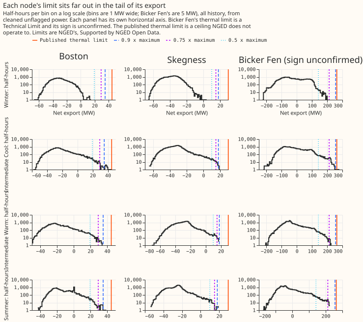
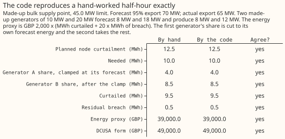
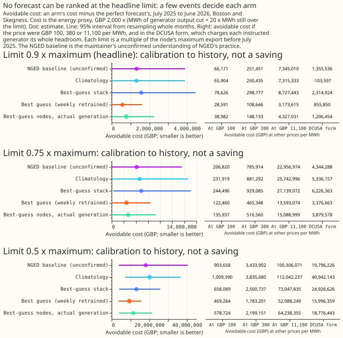

Experiment 84: the substation-limit curtailment metric on the pilot, a worked example
Two substations hold too few half-hours beyond a limit to rank forecasts: at 0.9 times each substation's earlier maximum export there are 19. We asked what it would have cost if the electricity network operator had capped nearby generators whenever a forecast said a substation would export more than a limit. We scored the stored demand and generator forecasts of experiment 48 (an earlier experiment that stored them) for Boston and Skegness, two bulk supply points (132 kV to 33 kV substations), over the year to 30 June 2026.
Most of the cost is breach, not unneeded cuts. For the best guess at 0.9 times the maximum, 81% of the avoidable cost is breach: export that stayed over the limit because the forecast did not order enough cuts. The next step is the January 2027 delivery of about 2,500 series, which the same code can score unchanged.
Verdict: inconclusive (no registered contrast). Every cost below is a calibration to history, not a saving. The best guess has the lowest avoidable cost at all three limits, but at 0.9 the order of the arms cannot be separated statistically: no difference is significant at the 5% level. The published thermal limits are NGED's, Supported by NGED Open Data. Questions for NGED are collected in issue #1318 (Questions to ask NGED about curtailment).
Which limit, and why a scaled one
The published thermal limit is a ceiling, and the maintainer understands that NGED does not operate to it. The understanding, unconfirmed, is that NGED curtails early so that one more fault still leaves headroom. Boston's metered export reached its published limit once, so the ceiling is not unreachable. The limit we score against therefore stands in for operating headroom: 0.9, 0.75, or 0.5 times each substation's maximum export before 2025-07-02 (the scaled limit). Boston's earlier maximum is about 39 MW, so 0.9 times it is 35.2 MW. History's maximum can be exceeded in the scored year: the highest export in all history, 45.08 MW at Boston, came inside it.
The event census comes first


The counts are too small to rank forecasts at the headline limit. Counts below are half-hours of metered flow beyond the limit in the scored year, from cleaned unflagged power. The published thermal limits (NGED's, Supported by NGED Open Data) are the smaller of each substation's two transformer limits. A Technical Limit is the single figure NGED publishes for a grid supply point.
| Node | Published thermal limit (reference) | 0.9 x maximum | 0.75 x maximum | 0.5 x maximum |
|---|---|---|---|---|
| Boston | 1 (45.0 MW) | 17 | 36 | 215 |
| Skegness | 0 (29.8 MW) | 2 | 10 | 108 |
| Bicker Fen (sign unconfirmed, not scored) | 0 | 0 | 84 | 734 |
- Scored nodes: Boston and Skegness together have 19 half-hours at 0.9 times the maximum, 46 at 0.75, and 323 at 0.5. Only at 0.5, half the observed peak, are there more than 100 per node.
- Scoring coverage: the census counts all 34,942 metered half-hours of the two nodes. Scoring uses the 27,936 that have a stored forecast in the 12 to 36 hour lead window. All 19 events at 0.9 are scored, 41 of 46 at 0.75, and 268 of 323 at 0.5. The unscored half-hours hold 4% of the excess energy at 0.75 and 14% at 0.5.
- Import: the scaled import counts are in figure 1. No published import limit is used, and curtailing generators cannot relieve an import limit, so import is counted and not priced.
- Signs: Boston and Skegness are -1 (a positive reading is import), inferred from the sign of the metered net flow in our power table. Bicker Fen is +1 and unconfirmed. Walpole's sign is unknown, so the metric excludes it.
- Seasons: each limit is the same in all four NGED seasons (Winter December to February, Intermediate Cool March, April and November, Intermediate Warm May, September and October, Summer June to August).
Does the code reproduce a hand-worked answer?

Yes: all eight quantities agree exactly. The example is made up (a 45.0 MW limit and two
generators of 10 MW and 20 MW). One generator's share is cut to its own forecast energy, and some
export is left over as breach. e00084_known_answer.py fails if the code and the hand answer
disagree.
What the cost contains
Each arm forecasts a substation's export and its generators' output, and the cost counts cuts and breach. An arm is one pair of forecasts. When an arm's 95th-percentile forecast of export (tau 0.95) exceeds the limit, the metric orders the generators beneath the substation to cut that excess, sharing it by capacity. The energy proxy is the price times (MWh of generator output cut + 20 x MWh still over the limit after the cuts). The 20 is the breach ratio, so a MWh left over costs 20 times a MWh cut. Curtailment Limit 0 means no hours of curtailment are free. The six arms are:
- Best guess (weekly retrained): the substation forecast retrained every week, with each generator's forecast retrained monthly.
- Best-guess stack: the substation forecast fitted once, corrected from its own recent errors, with a generator forecast fitted once.
- Climatology: the typical value for that month, half-hour and weekday or weekend.
- NGED baseline (unconfirmed): the manual heuristic's substation forecast, with every generator assumed to run at full capacity. This is the maintainer's unconfirmed understanding of NGED's practice, and the name always means that.
- Best-guess nodes with actual generation: the best guess's substation forecast, with each generator's metered output known exactly (a diagnostic).
- Perfect forecast: every quantile equal to the metered value, so the arm is charged only what cannot be avoided.
For the best guess at 0.9 times the maximum, the avoidable cost of GBP 571,823 splits into three parts. Avoidable cost is the arm's cost minus the perfect forecast's GBP 87,460.
| Part | GBP |
|---|---|
| Unneeded cuts: output cut in half-hours where metered export was within the limit | 114,496 |
| Energy lost on the 19 event half-hours, more than the perfect forecast loses | -7,791 |
| Breach: MWh still over the limit on event half-hours, at 20 times the price | 465,118 |
The forecast ordered 13.6 MWh of cuts on event half-hours against 35.1 MWh needed, so most of the excess was left as breach. Climatology orders no cuts at 0.9, so its whole avoidable cost is breach. The perfect forecast still costs GBP 87,460 because it cuts a little more than needed: some generators produce more than their estimated capacity, and the cap removes that extra output.
At the published thermal limit, both figures are absolute costs. The one scored half-hour is 0.038 MWh over the limit. Every arm except the perfect forecast costs GBP 1,540 (0.038 MWh x 20 x GBP 2,000, because none ordered a cut) and the perfect forecast costs GBP 1,225. The avoidable cost is GBP 315.
Cost per arm

Absolute cost of the perfect forecast, and avoidable cost of each other arm, in GBP over the scored year at GBP 2,000 per MWh, Curtailment Limit 0. All figures are a calibration to history, not a saving.
| Arm | Avoidable GBP at 0.9 x maximum | at 0.75 x | at 0.5 x |
|---|---|---|---|
| Perfect forecast (absolute cost) | 87,460 | 252,428 | 1,341,908 |
| Best guess (weekly retrained) | 571,823 | 2,449,203 | 9,385,270 |
| Best-guess stack | 1,572,512 | 4,889,923 | 13,161,772 |
| Climatology | 1,318,078 | 4,638,378 | 20,187,791 |
| NGED baseline (unconfirmed) | 1,323,425 | 4,136,392 | 18,073,166 |
| Best-guess nodes with actual generation | 779,645 | 2,718,739 | 11,574,478 |
Figure 4 also shows the avoidable cost at three other prices, GBP 100, 380 and 11,100 per MWh. The last three are the ends and the geometric middle of a GBP 380 to 11,100 range reconstructed from April 2025 contracts, and GBP 100 is an illustrative balancing price. The energy proxy scales with price, so the order of the arms does not change. The DCUSA form follows the payment rule of the Distribution Connection and Use of System Agreement (Metric 2 of the cost-savings roadmap). It charges each instructed generator its whole headroom, so it ranks arms differently. Its avoidable cost is negative for climatology because the perfect forecast instructs generators and is charged for their headroom, while climatology instructs none.
- 0.9 times the maximum: no difference is statistically significant at the 5% level. The best guess minus the NGED baseline is -GBP 751,603 (95% interval -2,293,480 to +14,988), and minus climatology is -GBP 746,255 (-2,288,392 to +30,815). The stack minus the best guess is +GBP 1,000,690 (0 to 2,865,606).
- 0.75 times the maximum: the stack costs GBP 2,440,720 more than the best guess (96,371 to 6,686,043), which is significant. The best guess minus climatology is -GBP 2,189,175 (-6,255,250 to 0) and minus the NGED baseline is -GBP 1,687,189 (-5,138,390 to +38,991), neither significant.
- 0.5 times the maximum: the best guess is GBP 10,802,520 cheaper than climatology (-20,880,964 to -3,342,553), which is significant. Against the NGED baseline it is GBP 8,687,896 cheaper (-26,251,726 to +2,339,946), not significant. We have no evidence that NGED operates at this limit, so it is a rehearsal.
What to watch
- Generators without a forecast: summed over the six arms, 100,632 of 754,272 generator-half-hours (13%) on the scored rows had no finite forecast. Those generators were not capped, gave no relief, and so add to the breach. None had a forecast with no metered output.
- Forecast capped at capacity: a generator forecast above its effective capacity is capped at
the capacity, as
node_curtailmentrequires. All arms are capped alike. - Thermal limits: Boston's highest export in all history, 45.08 MW, sits on the published 45.0 MW limit, so 45.0 MW may be an operating ceiling or a clipped meter.
- Anonymisation: no generator appears singly. Every generator figure is a sum over at least 4 generators, in GBP or MWh, and the table joining generators to substations stays in the private data folder.
What the next experiment should answer
Whether a ranking appears once the January 2027 delivery gives about 2,500 series. The same function scores any number of nodes from longer tables.
Reproduce with uv run python ml-experiments/00084-*/e00084_report.py, then e00084_split.py,
e00084_known_answer.py and e00084_charts.py. The printed reports are in
data/ml-experiments/00084-substation-limit-curtailment-cost-worked-example/.